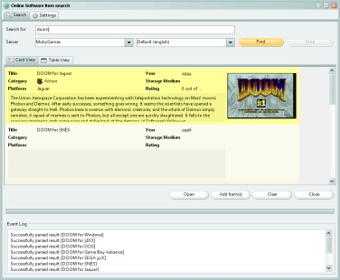

Online Searching
Menu path: Tools > Online Search
Data Crow can save you time by retrieving information about an item from an online database such as Amazon, IMDB.com, or Freedb.

Starting a search
The online search is available from the item form (to update an existing item), from the menu bar and the tool bar.
Before you can find the item you want, make sure you have selected the correct server. Each server comes with its own options.
For example; when you select an Amazon server you can select the location of the server you want to use. The server located in Germany will deliver you with descriptions in German, etc.
By default Data Crow searches on keywords. If there are other search modes available these will be displayed behind the keywords field. You can simply select another search mode to search on (for example) ISBN, Amazon ID (ASIN) or barcodes.
To stop a search press "stop". The search is then stopped and you can start a new search. To clear previous found results, press "clear".
Settings
There are several settings for you to consider.
Values to retrieve
When searching for new items you can specify for which fields values should be retrieved. To do this click the settings button and select
all the fields for which you want Data Crow to find values for. When updating an item an almost identical option exists. This time however
you select the fields for which the values of the existing item should be overwritten (if at all).
Retrieve full details on initial search (slow)
Instead of retrieving only the minimal amount of information you can choose to retrieve the full set of information at once.
This will slow down the search significantly!
Automatically add or update the item when a perfect match has occurred
Selecting this option Data Crow will stop the search as soon as it considers a match to be perfect.
Retrieve additional information on persons & companies
Data Crow can retrieve (in most cases) additional information on persons like actors and companies like software development organizations.
By default this option is disabled as this option slows down the online search. When this option is disabled, persons and companies are still created but without
any additional information. They will only have a name and nothing else. When this option is enabled Data Crow will try and retrieve images and a description. Note that at any point in time you can decide to update all persons and companies using the "Mass Update" feature (more about this) of Data Crow or one by one by using the online search functionality of the specific module.
Adding the results to Data Crow
When you have found the result you were looking for select the item(s) and press "Add item(s)".
The items are now added to your collection!
To update an existing item press "Update". The values in the item form will be updated with the values from the selected result.
Before you update check if you want to overwrite existing values. If so, tick the "overwrite existing values" (off by default).
This setting will be remembered.